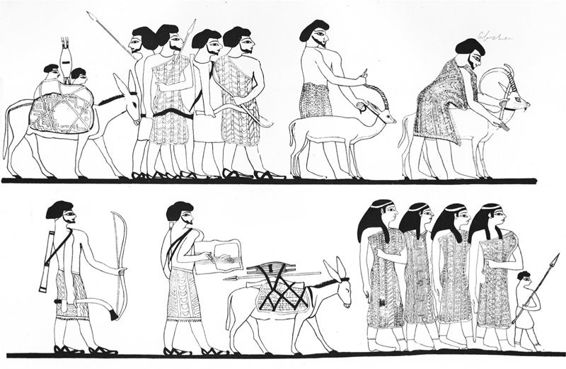
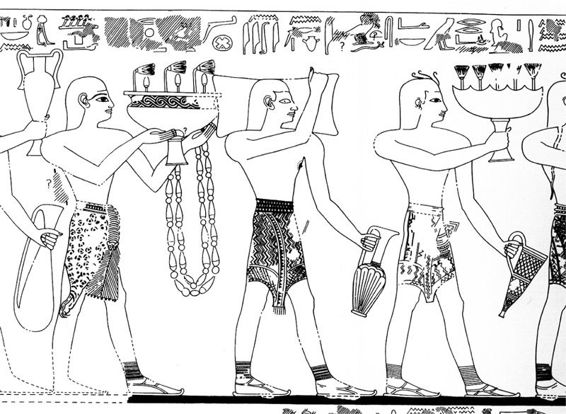

Hacia el año 1477 a. C., en la ciudad de Peru-Nefer, en el delta del Nilo (en el Bajo Egipto, cerca del mar Mediterráneo), el faraón Tutmosis III ordenó construir un gran palacio con frescos muy trabajados. Para la pintura se contrató a artistas minoicos de la lejana Creta, situada bastante más al noroeste, dentro del Gran Verde (según los egipcios llamaban al mar Mediterráneo). Crearon imágenes nunca vistas en Egipto —extrañas escenas de hombres que saltaban por encima de toros— aplicando la pintura sobre el yeso aún húmedo, con un estilo al fresco por el que los colores pasaban a formar parte de la propia pared. Era una técnica, y unas escenas, que habían aprendido en Creta, en el Egeo. Las imágenes únicas creadas con esta técnica estaban entonces de moda no solo en Egipto, sino también en palacios de toda la costa, desde Canaán, en el norte, hasta el Delta egipcio, en lugares que hoy conocemos como Kabri (en Israel), Alalaj (en Turquía), Qatna (en Siria) y Dab’a (en Egipto).[1]
Peru-Nefer, la ciudad del delta, se ha identificado ahora con la moderna Tell ed-Dab’a. El yacimiento ha sido excavado por el arqueólogo austríaco Manfred Bietak y su equipo desde 1966. La ciudad también fue conocida antes como Ávaris, la capital de los hicsos, los odiados invasores de Egipto que gobernaron buena parte del país desde aproximadamente 1720 a 1550 a. C. Ávaris se transformó en Peru-Nefer, una metrópoli egipcia tenida en alta estima, después de que la conquistara un antepasado de Tutmosis, el faraón egipcio Kamose, hacia 1550 a. C.
Al desenterrar una ciudad antes rica y ahora enterrada bajo metros de arena y escombros, Bietak sacó a la luz, en el transcurso de cuatro décadas, tanto la ciudad principal de los hicsos como la posterior metrópoli egipcia. También recuperó los increíbles frescos creados por los minoicos, o posiblemente por artistas locales que aprendieron de maestros minoicos, que se remontan a principios de la Dinastía XVIII (hacia 1450 a. C.).[2] Son buenos ejemplos del mundo internacionalizado que empezó a agregarse en el Mediterráneo oriental y el Egeo después de que los hicsos fueran expulsados de Egipto.
Los hicsos invadieron por primera vez Egipto hacia 1720 a. C., un cuarto de milenio antes de la época de Tutmosis III. Permanecieron allí casi doscientos años, hasta 1550 a. C. En la época en que los hicsos se hicieron con el control del país, Egipto era una de las potencias asentadas del antiguo Oriente Próximo. Las pirámides de Guiza ya contaban casi mil años, por entonces: fueron erigidas durante la Dinastía IV, en el período del Imperio Antiguo. Manetón, un sacerdote egipcio que vivió y escribió en época helenística —en el siglo III a. C., un período muy posterior—, calificó a los hicsos de «reyes pastores», con una traducción errónea de la expresión egipcia hekau jasut, que en realidad significa «jefes de tierras extranjeras». Y eran en efecto extranjeros, porque los hicsos eran semitas que emigraron a Egipto desde la región de Canaán, es decir, los actuales Israel, Líbano, Siria y Jordania. Ya se ven representaciones de estos semitas en Egipto en el siglo XIX a. C., por ejemplo en una pintura mural de una tumba egipcia en Beni Hasan, donde se muestra a mercaderes «asiáticos» y comerciantes que llevan sus productos al país.[3] La invasión hicsa de Egipto puso fin al período del Imperio Medio (hacia 2134-1720 a. C.). Posiblemente, su éxito se debió a la ventaja tecnológica de su armamento y a su capacidad de asestar el primer golpe, pues disponían de arcos compuestos que podían lanzar flechas mucho más lejos que los arcos tradicionales de la época. También disponían de carros tirados por caballos, que en Egipto no se habían visto nunca.

Fig. 3. «Asiáticos» en Beni Hasan (según Newberry, 1893, láminas XXX/XXXI; cortesía de la Egypt Exploration Society).
Tras la conquista, los hicsos gobernaron Egipto —principalmente desde su capital, establecida en Ávaris, en el Delta del Nilo— durante el que se conoce como Segundo Período Intermedio (las Dinastías XV a XVII), en un período de casi doscientos años, desde 1720 a 1550 a. C.[4] Entre 3000 y 1200 a. C., esta es una de las pocas épocas en que Egipto estuvo gobernado por extranjeros.
Los relatos e inscripciones próximos al final de este período, hacia 1550 a. C., recogen algunas de las batallas que enfrentaron a los egipcios y los hicsos. Una historia en especial narra el desacuerdo entre dos gobernantes: La disputa de Apofis y Sekenenre. En este relato —muy probablemente apócrifo—, el rey hicso se queja de que no puede dormir de noche por culpa del ruido que hacen los hipopótamos del estanque del rey egipcio, Sekenenre, que gobernaba al mismo tiempo que él en otra parte de Egipto. La protesta es ridícula, porque varios centenares de kilómetros separaban ambas cortes reales: una estaba situada en el Alto Egipto y la otra en el Bajo Egipto; el rey de los hicsos no podía oír de ningún modo a los hipopótamos, por alto que chillasen.[5] Pese a todo, los arqueólogos han descubierto la momia de Sekenenre y, por las heridas en el cráneo —provocadas por una hacha de guerra—, está claro que murió violentamente durante una batalla. ¿Se trató de un enfrentamiento con los hicsos? No lo sabemos con seguridad; sin embargo, es posible que Apofis y Sekenenre combatieran entre ellos, fuese o no por los hipopótamos.
También disponemos de una inscripción que nos legó el faraón Kamose, el último de los gobernantes de la Dinastía XVII de Egipto. En aquel momento, Kamose gobernaba desde su residencia de Tebas, en el Alto Egipto. Ofrece detalles de la victoria definitiva contra los hicsos, a quienes llama «asiáticos», en el siguiente texto datado hacia 1550 a. C.:
Yo he bajado río abajo como un campeón para expulsar a los asiáticos… Mi valiente ejército estaba frente a mí, como una ráfaga de fuego; tropas… eran la avanzada de nuestras fortificaciones… para destruir sus lugares… Pasé la noche en mi barco, estando mi corazón contento. (Cuando) amaneció, yo (ya) estaba sobre él, como está el halcón. (Cuando) llegó el tiempo de perfumar la boca, le ataqué. Arrasé sus murallas, maté a su gente. Hice que su mujer descendiera a la orilla. Mi ejército era como (son) los leones, con su botín, con esclavos, ganado, leche y miel, dividiéndose sus bienes, estando sus corazones llenos de [alegría] .
Kamose también nos habla del destino de la propia Ávaris:
[En cuanto a] Ávaris, en los [Dos R]íos… yo los he dejado devastados, sin gente allí. He arrasado sus ciudades y he quemado sus lugares, que se han convertido en estériles montículos para toda la eternidad, a causa del daño que han hecho a Egipto, ellos que han hecho que sirvan (los egipcios) a los asiáticos, (cuando) invadieron Egipto, su señora.[6]
Y con esto, los egipcios expulsaron a los hicsos del país. Regresaron a Retenu (uno de los antiguos nombres egipcios para la actual Israel y Siria, la misma zona en general que en Egipto también se conocía como Pa-ka-na-na, o Canaán). Mientras tanto, los egipcios fundaron la Dinastía XVIII, que empezó con Amosis, hermano de Kamose, quien inició el período que hoy denominamos «Imperio Nuevo de Egipto».
Ávaris y el resto de Egipto fueron reconstruidos durante este período, y la ciudad cambió de nombre. En época de Hatshepsut y Tutmosis III —unos sesenta años después, hacia 1500 a. C.— volvía a ser una ciudad floreciente, conocida ahora como Peru-Nefer, donde los palacios se decoraban con frescos al estilo minoico y representaban escenas de saltos de toros y otras que se antojan más propias de Creta, en el Egeo, que de Egipto. Un arqueólogo ha apuntado la posibilidad de que hubiera llegado a celebrarse un matrimonio real entre un gobernante egipcio y una princesa minoica.[7] Sin duda, más adelante, durante las Dinastías XVIII y XIX, se produjeron varios matrimonios entre faraones egipcios y princesas extranjeras, fundamentalmente con la intención de reforzar los lazos diplomáticos o un tratado con una potencia extranjera, como veremos; pero no es necesario invocar matrimonios políticos para explicar la aparición de pinturas murales minoicas en Egipto, pues disponemos de otras pruebas independientes que nos hablan de contactos entre el Mediterráneo oriental, Egipto y, en este caso, el Egeo.
Está claro, por un gran número de datos —desde artefactos arqueológicos a pruebas textuales y pictóricas—, que los minoicos de Creta ya habían establecido contacto con varias zonas del antiguo Oriente Próximo mucho antes de su interacción con los faraones egipcios del Imperio Nuevo. Por ejemplo, tenemos noticia de objetos de manufactura minoica que cruzaron el Egeo y el Mediterráneo oriental hasta Mesopotamia, la tierra entre los dos ríos —el Tigris y el Éufrates—, en el siglo XVIII a. C., hace casi cuatro mil años.
La documentación de este comercio antiguo proviene del yacimiento arcaico de Mari, en la orilla oriental del río Éufrates, en la moderna Siria, donde, durante la década de 1930, arqueólogos franceses recuperaron un tesoro oculto de más de veinte mil tablillas de barro inscritas. Algunos vecinos los enviaron al yacimiento al descubrir, accidentalmente, lo que al principio creyeron que era un hombre decapitado y luego resultó ser una estatua de piedra; una de muchas, como por ejemplo otra con una inscripción que lo identificaba como rey de la antigua ciudad.[8] Las tablillas, con textos escritos en acadio antiguo, provenían de un archivo de la correspondencia real y otros archivos más prosaicos de los reyes de Mari, incluido cierto Zimri-Lim, que gobernó hacia 1750 a. C. Contenían todo tipo de información relativa a la administración del palacio y la organización del reino, además de otros aspectos de la vida cotidiana de la época.
Una de estas tablillas, por ejemplo, habla del hielo que Zimri-Lim utilizaba para sus bebidas de verano, que incluían vino, cerveza y bebidas a base de cebada fermentada, aromatizadas con zumo de granada o anisados del estilo de la regaliz. Sabemos que se había ordenado la construcción de un pozo de nieve en la orilla del Éufrates, donde guardar el hielo recogido en las montañas nevadas durante el invierno hasta que hiciera falta en los meses de verano. Zimri-Lim afirmaba que ningún otro rey había construido una nevera como aquella, y quizá fuera cierto, pero el uso de hielo en las bebidas no era nuevo en la región, hasta el punto en que un rey le recordó a su hijo que los sirvientes debían limpiar el hielo antes de ponerlo en las bebidas: «Haz que recojan el hielo, y que lo limpien de ramitas, estiércol y barro».[9]
Los archivos dan constancia de comercio y contacto con otras áreas del Mediterráneo y del Oriente Próximo, con una mención especial de los artículos poco comunes que se recibían. También sabemos, gracias a aquellas tablillas, que era frecuente intercambiar regalos entre los gobernantes de Mari y los de otras ciudades y reinos, y que los reyes se requerían entre sí los servicios de médicos, artesanos, tejedores, músicos y cantantes.[10]
Entre los objetos exóticos de importación que aparecen en las tablillas de Mari se incluyen una daga y otras armas de oro incrustadas con piedras de lapislázuli, además de ropas y tejidos «fabricados a la manera de Caftor».[11] Caftor (o Kaptaru) era el nombre cananeo y mesopotámico de Creta; luego los egipcios la llamarían Keftiu. Los artículos habían recorrido un largo camino desde Creta, adquiriendo lo que hoy se conoce como «valor de lejanía», además del valor inherente que ya poseían por el trabajo artesano y los materiales de que estaban hechos.
Otra tablilla da cuenta de una situación poco usual, cuando Zimri-Lim, el rey de Mari, envió desde Creta un par de zapatos minoicos como regalo para el rey Hammurabi de Babilonia. El texto dice, sencillamente, «Un par de zapatos de cuero al estilo caftóreo, que llevó al palacio de Hammurabi, rey de Babilonia, Bahdi-Lim (un funcionario), pero que fueron devueltos».[12] No aparece la razón por la que se retornaron los zapatos. Quizá simplemente no eran de la talla. El código legislativo de Hammurabi —el primero en el que aparece la cita «ojo por ojo, diente por diente» que luego hizo famosa la Biblia hebrea— no especifica castigos por devolver artículos del tipo de unos zapatos.
Es un poco sorprendente que Hammurabi rechazase los zapatos de cuero, con independencia de si le iban bien o no, porque probablemente eran raros y poco frecuentes en su tierra, en aquella época, dada la distancia que había entre Creta y Mesopotamia, es decir, entre lo que hoy es la Grecia moderna y Siria/Iraq. Un viaje como aquel no se habría emprendido a la ligera y es probable que se realizara por etapas: diversos comerciantes o mercaderes transportarían los artículos en los distintos segmentos del viaje. Por otra parte, que se entregasen regalos de aquel tipo entre reyes de igual rango era una práctica bien conocida en el antiguo Oriente Próximo durante el segundo milenio a. C.[13] En aquellos casos, los artículos en cuestión llegaban directamente en manos de emisarios de uno de los reyes, en lo que hoy llamaríamos embajadas diplomáticas.
De lo que acabamos de ver se desprende que los minoicos de Creta estuvieron en contacto con diversas zonas del antiguo Oriente Próximo durante la Edad del Bronce media y tardía, desde al menos 1800 a. C. Incluso en las cartas de Mari se hace mención de los minoicos y, posiblemente, de un intérprete minoico (o quizá un intérprete para ellos), presente en Ugarit, en el norte de Siria, durante los primeros años del siglo XVIII a. C., donde recibían estaño enviado al oeste desde Mari.[14] No obstante, parece ser que hubo una relación especial con Egipto desde principios del siglo XV, durante la época de Hatshepsut y luego Tutmosis III, razón por la que nuestra historia comienza en este punto temporal.
Es interesante señalar que a la civilización minoica la bautizó así el arqueólogo británico sir Arthur Evans a principios de la década de 1900. No sabemos realmente cómo se llamaban ellos a sí mismos; solo se sabe que egipcios, cananeos y mesopotámicos usaban cada uno un nombre distinto para referirse a ellos. Además, tampoco sabemos de dónde provenían, si bien sospechamos que venían de ciertas áreas de Anatolia/Turquía.
No cabe duda de que fundaron una civilización en Creta durante el tercer milenio a. C. que duró hasta aproximadamente 1200 a. C. Mediado este período, hacia 1700 a. C., la isla fue asolada por un terremoto terrible que obligó a reconstruir los palacios de Cnossos y el resto de la isla. Pese a todo, los minoicos se recuperaron rápidamente y florecieron como civilización independiente hasta que más adelante, en el segundo milenio, los micénicos invadieron la isla desde la Grecia continental; a partir de entonces, la isla siguió bajo gobierno micénico hasta que todo se derrumbó hacia 1200 a. C.
Sir Arthur Evans empezó a excavar en Creta tras seguir la pista a la fuente de las llamadas «piedras de leche» que encontró a la venta en la plaza del mercado de Atenas. Estas piedras las llevaban las mujeres griegas que habían dado a luz o estaban a punto de hacerlo. Tenían símbolos grabados que Evans no había visto jamás, pero que reconoció como escritura. Les siguió la pista hasta una zona de enterramientos en el monte de Kéfala, en Cnossos (Creta), cerca de la gran ciudad moderna de Heraclión; un emplazamiento que Heinrich Schliemann, el arqueólogo que excavó Troya, había tratado de comprar para estudiarlo, aunque en vano. Evans, en cambio, sí logró comprar la tierra y empezó las tareas de excavación en marzo de 1900. Continuó excavando durante varias décadas, dedicando a aquel proyecto casi toda su fortuna personal, y al final publicó sus hallazgos en una colosal obra en varios volúmenes, titulada The Palace of Minos at Cnossos.[15]
Junto con su leal ayudante escocés, Duncan Mackenzie,[16] Evans sacó a la luz pronto lo que parecía ser un palacio real. De inmediato bautizó la civilización recién descubierta como «minoica», en referencia al rey Minos de la leyenda griega, del que se cuenta que gobernó Creta en tiempos antiguos e incluso tuvo un minotauro (mitad hombre, mitad toro) en un laberinto situado en los subterráneos del palacio. Evans recuperó muchas tablillas de arcilla, además de otros objetos, con muestras de escritura, tanto en Lineal A (aún sin descifrar) como en Lineal B (una forma primitiva del griego que probablemente llegó a Creta por la vía micénica). Ahora bien, no logró descubrir el verdadero nombre de aquellos pueblos, lo cual, como ya he indicado, sigue siendo un misterio incluso para nosotros, pese al siglo largo de excavaciones interrumpidas que se vienen realizando no solo en Cnossos sino también en otros muchos lugares de Creta.[17]
Evans halló en Cnossos numerosas importaciones de Egipto y el Oriente Próximo, como una tapa de alabastro con una inscripción jeroglífica que dice: «el buen dios, Seweserenre, hijo de Re, Jyan».[18] Jyan, uno de los reyes hicsos más conocidos, gobernó durante los primeros años del siglo XVI a. C. Se han encontrado objetos suyos por todo el antiguo Oriente Próximo, pero sigue siendo un misterio cómo llegó esta tapa hasta Creta.
También es interesante un jarrón egipcio de alabastro hallado muchos años después, durante otra excavación arqueológica, en una tumba del yacimiento de Katsamba en Creta, una de las ciudades portuarias de la costa norte, vinculada con Cnossos. Lleva inscrito el nombre real del faraón Tutmosis III: «El buen dios Menjeperre, hijo de Re, Tutmosis, perfecto en transformaciones». Es uno de los escasos objetos hallados en el Egeo con su nombre.[19]
Tucídides, historiador griego del siglo V a. C., afirmó que, en aquella época, los minoicos disponían de una flota naval con la que dominaban los mares: «Minos fue el primero, de los que conocemos por la tradición, en procurarse una flota y extender su dominio por la mayor parte de lo que hoy llamamos mar griego» (Tucídides, Historia de la guerra del Peloponeso, I, 3-8).[a] Hace unos años, los historiadores bautizaron este dominio del mar como la «talasocracia minoica» (compuesto del griego thálassa, «mar», y kratía, «poder»). Si bien recientemente esta supuesta supremacía naval minoica se ha puesto en tela de juicio, en los documentos egipcios aparecen referencias a los «botes de Keftiu» —Keftiu es siempre el término egipcio para aludir a Creta—, aunque no está del todo claro si se trataba de botes venidos de Creta, que iban allí o construidos al modo minoico.[20]
El sucesor de Evans en el yacimiento, John Devitt Stringfellow Pendlebury, manifestó un enorme interés por las posibles conexiones entre Egipto y Creta; excavó el yacimiento egipcio de Amarna (la capital de Ajenatón, de la que tendremos ocasión de hablar más adelante) y el de Cnossos. Pendlebury incluso publicó una monografía sobre este tema, que tituló Aegyptiaca, en la que recogió y catalogó todas las importaciones egipcias halladas en Cnossos y cualquier otro emplazamiento de la isla, antes de que los paracaidistas alemanes le disparasen mortalmente durante la invasión de Creta, en 1941.[21]
Evans y Pendlebury hallaron otros objetos importados en Cnossos, y durante las décadas posteriores se ha descubierto que, al parecer, los minoicos participaron en negocios de importación y exportación, y se esforzaron por trabar una red de contactos con varios países, además de Egipto. Por ejemplo, en varios yacimientos de Creta, pertenecientes a los contextos de la Edad del Bronce media y tardía, se han recuperado sellos cilíndricos de Mesopotamia y jarras de almacenamiento de Canaán; y se ha descubierto cerámica minoica y otros objetos terminados, o al menos mención a ellos, en países que van de Egipto, Israel, Jordania y Chipre hasta Siria e Iraq.
No debemos olvidar que los productos antes mencionados representan solo una porción muy menor de los que llegaron a cruzar el Mediterráneo, porque buena parte de los productos con los que se comerció durante la Edad del Bronce tardía eran perecederos y era improbable que hubieran quedado muchos restos identificables hoy. Cereales, vino, especias, perfumes, madera y productos textiles desaparecieron hace mucho, con casi total seguridad. Materias primas como el marfil, piedras preciosas como el lapislázuli, las ágatas o la cornalina, y metales como el oro, el cobre y el estaño, por su parte, hace también mucho tiempo que habrían sido transformados en otros objetos, como armas o joyas. De este modo, los indicadores más abundantes de las rutas comerciales y los contactos internacionales se habrían estropeado o desintegrado, o habrían desaparecido de algún otro modo, ya en la propia Antigüedad. Pese a todo, a veces la existencia de productos comerciales perecederos puede identificarse en los textos escritos o por su inclusión en las pinturas murales preservadas hasta el día de hoy. Estas pinturas, inscripciones y referencias literarias pueden servir como guías menos ambiguas para determinar los contactos entre pueblos, siempre y cuando las interpretemos correctamente. Por lo tanto, las representaciones de los pueblos extranjeros que aparecen en una serie de pinturas de tumbas egipcias fechadas en los reinados de los faraones del Imperio Nuevo, de Hatshepsut a Amenofis III, son de un valor incalculable en tanto que testimonios concretos de las redes diplomáticas, comerciales y de transporte activas durante los siglos XV y XIV a. C.[22]
Durante el reinado de Hatshepsut, en el siglo XV a. C., se edificó la primera de las tumbas cuya decoración mural retrata efectivamente a pueblos del Egeo. En estas tumbas vemos, con frecuencia, a los minoicos, muchas veces con sus productos y con inscripciones que sitúan de forma inequívoca su procedencia en la isla de Creta. Por ejemplo, en la tumba de Senenmut, el arquitecto, consejero y quizá amante de Hatshepsut, se representa una embajada del Egeo donde seis hombres llevan vasos de metal de manufactura típicamente egea.[23]
En otra pintura, dentro de la tumba de Rejmire, visir de Tutmosis III (hacia 1450 a. C.), vemos a hombres vestidos con las típicas faldas al estilo egeo y con objetos específicos del Egeo. Junto a ellos se escribe (en parte): «Enviados pacíficos de los jefes de Keftiu y las “islas de en medio del mar” se inclinan y bajan la cabeza ante el poder de Su Majestad el rey del Alto y Bajo Egipto».[24] Se representa, sin duda alguna, una delegación egea enviada a Egipto, una de las varias preservadas en las tumbas egipcias de este período.

Fig. 4. Tumba de Rejmire, con la representación de pueblos egeos (según Davies, 1943, lám. XX; cortesía del Metropolitan Museum of Art).
Los pueblos del Egeo no son los únicos que aparecen en la tumba de Rejmire; en otros registros, tanto superiores como inferiores, se ven emisarios del Punt, de Nubia y Siria, con inscripciones al lado de cada uno de ellos. Aunque no se ha demostrado, parece bastante probable que estemos contemplando el retrato de alguno de los acontecimientos principales que sucedieron durante el reinado de Tutmosis III, y que los delegados o comerciantes del Egeo sean tan solo una parte de la multitud que, venida de diversas tierras, se reunió o fue convocada allí. De ser así, lo más probable es que se tratara del festejo del Sed («aniversario»), que un faraón celebraba por primera vez a los treinta años de gobierno y, en adelante, de forma irregular. En el caso de Tutmosis, sabemos que organizó al menos tres celebraciones de esta naturaleza, lo cual no resulta sorprendente puesto que gobernó durante cincuenta y cuatro años.[25]
En total, existen unas catorce tumbas fechadas en los reinados de Hatshepsut o de Tutmosis III, todas pertenecientes a funcionarios y asesores de alto rango, en las que se representa a delegaciones de visitas extranjeras a Egipto, incluidos pueblos del Egeo, nubios y cananeos; todos traen productos extranjeros.[26] En nueve de las tumbas fechadas específicamente en la época de Tutmosis III, vemos numerosos retratos de extranjeros que ofrecen presentes diplomáticos, entregan los impuestos anuales o participan en una expedición encargada por el propio rey, que Tutmosis III envió al Líbano a comprar cedro.[27]
Keftiu, los hombres de Keftiu y los barcos-Keftiu se mencionan en varios otros contextos del Egipto en este período, incluidas inscripciones de templos y anotaciones realizadas sobre papiro. Entre los casos más interesantes está un papiro del trigésimo año de Tutmosis III (hacia 1450 a. C.), en el que se mencionan varias veces los «barcos de Keftiu» en el contexto de la importación de materiales para la armada egipcia: «Entregada al artesano [se indica su nombre] esta madera para la cubierta del barco-Keftiu»; «Entregado hoy al artesano Tity para el otro barco-Keftiu que se le ha encargado»; y «entregado al artesano Ina para el otro… barco-Keftiu».[28] De un modo parecido, en una inscripción mural del templo de Amón en Karnak, del trigésimo cuarto año de Tutmosis III, también se mencionan los barcos-Keftiu.[29]
Aunque seguimos sin saber si estos barcos son de Keftiu (es decir, minoicos) o más bien capaces de ir a Keftiu (es decir, egipcios), lo que sí está claro es que en la época de Tutmosis III hubo contacto —y probablemente, directo— entre la Creta minoica y el Egipto del Imperio Nuevo. Atendiendo a los vientos que predominaban, un navío a vela —ya sea hoy o hace tres mil cuatrocientos años— puede viajar con relativa facilidad desde las costas del sur de Creta hasta Marsa Matruh, en el litoral norte de Egipto, y de allí al delta del Nilo. El viaje de regreso, por vía marítima, no es fácil, a causa de los vientos y las corrientes, pero aun así es factible, en determinadas épocas del año. También era posible avanzar en sentido contrario a las agujas del reloj: pasar de Egipto a Canaán y Chipre, de ahí a Anatolia y Rodas, luego a Creta, las islas Cícladas y la Grecia continental, para de nuevo tocar tierra en Creta y seguir hacia el sur, hasta Egipto.
A partir de las pinturas e inscripciones de la tumba de Menjeperreseneb, primer profeta de Amón,[30] sabemos que los egipcios tenían conocimiento de la realeza minoica y la consideraban al mismo nivel que la de otras zonas extranjeras. En las paredes de la tumba podemos ver al «príncipe de Keftiu» (Creta) acompañado por el príncipe de los hititas (de Anatolia), el príncipe de Tunip (probablemente, en Siria) y el príncipe de Qadesh (en Siria). El título utilizado para identificar a los personajes, wr, que significaba «príncipe» o «jefe», es el mismo en todos los casos.[31] La imagen representada parece indicar que aquella realeza hacía visitas ocasionales a Egipto, quizá también en alguna ocasión muy especial. ¿Habían ido todos al mismo tiempo (quizá, como perspectiva distinta sobre el mismo acontecimiento retratado en la tumba de Rejmire)?, ¿o acudieron en momentos distintos? No podemos estar seguros, pero es interesante considerar la posibilidad de que los principales personajes de la Edad del Bronce tardía se reunieran en Egipto para celebrar un gran acontecimiento, como se reúnen hoy los dignatarios para celebrar una boda real británica o la conferencia del G-8.
El mismo término wr (príncipe o jefe) lo usa también en otro lugar Tutmosis III: en sus Anales, en la entrada del cuadragésimo segundo año, donde menciona al «príncipe de Tanaya (Tanaja)», designación egipcia de la Grecia continental. Aquí ofrece una lista de objetos provenientes del Egeo, entre los que hay una vasija de plata obrada a la manera de Keftiu y cuatro boles con asas de plata. Es interesante que los llame inw, un término que suele traducirse como «tributo», pero que en este contexto probablemente significa «obsequio».[32] Participar en un comercio regular podría haberse considerado impropio de la dignidad del rey, mientras que intercambiar «obsequios» con los iguales (o casi iguales) era del todo aceptable. Nos ocuparemos con más detalle de esta cuestión en el próximo capítulo, dentro del marco del comercio internacional que, so guisa de intercambio de regalos, funcionó durante el siglo XIV a. C.
El reinado de Hatshepsut, inmediatamente anterior al de Tutmosis III, fue testigo de interacciones no solo con el Egeo sino también con otras zonas del antiguo Oriente Próximo. En lo esencial, fue esta reina quien puso a la Dinastía XVIII en la senda de las relaciones internacionales y el prestigio mundial, recurriendo a la diplomacia antes que a la guerra. Su sangre era plenamente regia, como hija del faraón Tutmosis I y la reina Ahmose, aunque debemos señalar que su padre consiguió la condición real solo por el matrimonio.
Hatshepsut se casó con su propio hermanastro, Tutmosis II, con la intención de ayudar al joven, que no gozaba de una condición regia plena, pues su madre solo había sido una de las esposas menores del faraón, en lugar de la verdadera reina. Al casarse con Hatshepsut, su posición quedaba más legitimada. De aquella unión nació una hija, pero no un hijo, lo cual podría haber representado un desastre para la dinastía. Sin embargo, él tuvo un hijo con una de las jóvenes del harén, y se crió a este para que fuera Tutmosis III, destinado a seguir los pasos de su padre en el trono. Por desgracia, cuando Tutmosis II murió de forma inesperada, el joven no había alcanzado aún la edad suficiente para gobernar por cuenta propia. De este modo, Hatshepsut se hizo cargo del reinado como regente temporal. Sin embargo, al llegar el momento de entregar el mando, se negó. Hatshepsut estuvo gobernando durante más de veinte años, mientras Tutmosis III esperaba, probablemente con impaciencia, entre bastidores.[33]
Durante aquellas dos décadas, Hatshepsut empezó a llevar la tradicional barba falsa de los faraones y otros elementos propios del cargo, así como las vestiduras propias de un varón y la armadura que le ocultaba el pecho y otros atributos femeninos, como puede observarse en las estatuas esculpidas en Deir el-Bahari, su templo funerario. También se modificó el nombre y, alterando la terminación, lo masculinizó como «Su Majestad Hatshepsu».[34] En pocas palabras: gobernó como un hombre, como un faraón masculino, no solo como una regente. Hoy se la considera una de las mujeres más ilustres del Antiguo Egipto, junto con Nefertiti y Cleopatra. Al parecer, Hatshepsut no volvió a casarse después de la muerte de Tutmosis II, pero quizá adoptó como amante a su arquitecto y administrador principal, Senenmut; una imagen de él fue grabada, quizá en secreto, en el templo funerario de Hatshepsut en Deir-el-Bahari, cuya construcción fue supervisada por él mismo.[35]
Esta enigmática soberana está asociada con expediciones comerciales de carácter pacífico, que envió a Fenicia (hoy el Líbano) en busca de madera, y al Sinaí en busca de cobre y turquesas.[36] Pero la delegación más famosa fue la que mandó a la tierra del Punt durante su noveno año de reinado. El testimonio está inscrito en los muros de Deir el-Bahari. La ubicación exacta del Punt es desconocida para los estudiosos, que siguen debatiendo al respecto. En su mayoría, las autoridades lo sitúan en la región de Sudán, Eritrea o Etiopía, pero otros miran hacia otros lugares, casi siempre en las costas del mar Rojo, incluida la zona del actual Yemen.[37]
La expedición de Hatshepsut no fue la primera que salió de Egipto hacia el Punt, ni tampoco sería la última. Durante el período del Imperio Medio se habían enviado varias expediciones, y más tarde, a mediados del siglo XIV a. C., Amenofis III también mandó una delegación. Sin embargo, solo en el testimonio de Hatshepsut se representa a la reina del Punt, llamada «Eti», según la inscripción que acompaña la pintura. La ilustración de la reina extranjera ha generado muchos comentarios por su corta estatura, columna torcida, grasa acumulada en pliegues y gran trasero; por lo general, ha suscitado que en las interpretaciones modernas se considere a la reina afectada de esteatopigia (esto es, abdomen rollizo y muslos y nalgas muy grandes y, por lo general, prominentes). También aparecen palmeras, animales exóticos y otros detalles que muestran un escenario lejano, e imágenes de los barcos (detalladas, con sus mástiles y aparejos) que transportaban a los egipcios en sus idas y venidas del Punt.
Durante el trigésimo tercer año de su reinado, en algún momento posterior a 1450 a. C., Tutmosis III mandó su propia delegación comercial a la tierra del Punt. Así aparece debidamente anotado en sus Anales, igual que otra expedición que envió a la misma zona en el año 38.[38] Estos son algunos de los escasos ejemplos, junto con las expediciones que envió al Líbano a comprar cedro, en las que podemos documentar un comercio activo entre Egipto y una tierra extranjera durante el reinado de Tutmosis III. Sin embargo, sospechamos que buena parte de los «tributos» (inw) retratados en las escenas funerarias de los nobles de su reinado son, en realidad, productos de comercio.
Entre las zonas remotas con las que, según parece, Egipto comerciaba durante el reinado de Tutmosis III, y de las que este atestiguó haber recibido inw en tres ocasiones distintas, existía una región conocida por los egipcios como Isy, que muy probablemente se pueda identificar con la coalición de ciudades-estado del noroeste de Anatolia (hoy Turquía) conocida como Assuwa, o bien con Alashiya, el nombre con el que se designaba Chipre durante la Edad del Bronce. Los escribas de Tutmosis mencionan Isy al menos cuatro veces en varias inscripciones, por ejemplo, al lado de Keftiu, en su «Estela poética (Himno de la victoria)»: «Yo he venido para hacer que tú holles las tierras occidentales / Estando Keftiu e Isy llenos de respeto hacia ti / Hago que ellos vean a tu majestad como un cocodrilo / Señor de temor en medio de las aguas, que no puede ser atacado».[39] En los Anales de su novena campaña, en el año 34 (1445 a. C.), se cuenta que el «jefe de Isy» había traído inw en forma de materias primas: cobre puro, bloques de plomo, lapislázuli, un colmillo de elefante y madera. De un modo parecido, por el documento de su décimo tercera campaña, en el año 38 (1441 a. C.), sabemos que el «príncipe de Isy» trajo consigo inw consistentes en cobre y caballos, y en la descripción de su décimo quinta campaña, en el año 40 (1439 a. C.), se nos dice que el «jefe de Isy» llegó con inw que consistían en cuarenta ladrillos de cobre, un ladrillo de plomo y dos colmillos de marfil. La mayoría eran artículos típicos del intercambio de regalos de alto nivel en el Oriente Próximo de la Edad del Bronce.[40]
Podría ser que en estos últimos años se hubiera identificado por fin la momia de Hatshepsut, localizada en una tumba conocida como KV 60 (por ser la tumba 60 del Kings Valley o «Valle de los Reyes»), en lugar de en su propia tumba (KV 20), que se encuentra en otra parte del Valle de los Reyes. Hatshepsut fue una de las pocas mujeres que sepultadas en este valle de élite, por lo general reservado para los reyes masculinos de Egipto. Si la momia identificada es realmente la de Hatshepsut, al final de su vida padeció de obesidad, problemas dentales y cáncer.[41] Cuando finalmente murió, hacia 1480 a. C., Tutmosis III —de quien a veces se ha sospechado que tuvo algo que ver en su fallecimiento— no tardó en hacerse con el poder y, ya en su primer año de reinado en solitario, se marchó a entablar batalla. Además trató de borrar el nombre de Hatshepsut de la historia, ordenando que sus monumentos fueran profanados, y su nombre, eliminado de las inscripciones allí donde fuera posible.
Cuando Tutmosis III inició su primera campaña —la primera de las diecisiete que emprendió a lo largo de los siguientes veinte años (aproximadamente)—, logró hacerse un sitio en los libros de historia, y de un modo bastante literal, puesto que el itinerario y los detalles de su viaje y conquistas en 1479 a. C. pasaron de los diarios de campaña a ser inscritos para la posteridad sobre las paredes del templo de Amón en Karnak, Egipto. La batalla que, durante la campaña, libró en Megido (y que más tarde se haría famosa bajo el nombre bíblico de Armagedón) contra los jefes rebeldes de esta localidad cananea es la primera contienda conocida cuyos detalles se fijaron de forma escrita para la instrucción de cuantos no se hallaron presentes.
Según la inscripción, Tutmosis marchó con sus hombres en dirección norte, desde Egipto, durante diez días, hasta llegar a Yehem. Allí se detuvo para celebrar una asamblea de guerra y decidir el mejor modo de asaltar la ciudad fortificada de Megido y los campamentos provisionales situados en las inmediaciones, donde se ubicaban los gobernantes cananeos que habían iniciado la rebelión contra el gobierno egipcio tras la ascensión de Tutmosis al trono. Desde Yehem, había tres formas de llegar a Megido: una ruta norte, que salía al valle de Jezreel cerca de Yokneam; la ruta sur, que llevaba al valle de Jezreel cerca de Ta’anach; y una ruta central, que conducía directamente hasta Megido.[42]
Sus generales, según la inscripción, sugerían tomar las rutas norte o sur, porque eran más amplias y menos propicias a las emboscadas. Tutmosis contestó que aquella táctica era exactamente la que los cananeos esperarían; que estos jamás lo considerarían tan necio como para tomar la ruta central, puesto que era la más estrecha y vulnerable ante las emboscadas. Pero, precisamente porque así lo creerían, él marcharía directamente con su ejército por la vía central, con la esperanza de coger a los cananeos por sorpresa; y así fue exactamente como sucedió. Los egipcios tardaron casi doce horas en atravesar el paso central (denominado, en varios momentos de la historia, Uadi Ara, Nahal Iron o paso de Musmus), con todos los hombres, pero lo hicieron sin sufrir ni un rasguño y sin encontrarse a un solo guardián, ni en Megido ni en los campamentos provisionales de los alrededores. Todas las fuerzas cananeas estaban en Yokneam, al norte, y en Ta’anach al sur, justo como había predicho Tutmosis III. El único error que cometió fue permitir que sus hombres se detuvieran a saquear y arrasar el campamento enemigo antes de tomar efectivamente la ciudad. Este fallo dio a los escasos defensores de Megido —ancianos, mujeres y niños, en su mayoría— el tiempo necesario para cerrar las puertas de la ciudad. Los egipcios necesitaron entonces un asedio muy prolongado, de más de siete meses, para tomar la ciudad.
Unos tres mil cuatrocientos años más tarde —en septiembre de 1918, en el marco de la primera guerra mundial— el general Edmund Allenby probó la misma táctica que Tutmosis III, y obtuvo el mismo resultado victorioso. Ganó la batalla de Megido y apresó a centenares de soldados alemanes y turcos sin registrar bajas mortales en su bando, más allá de unos pocos caballos. Más tarde reconoció que, tras leer la traducción que James Breasted hiciera al inglés del relato de Tutmosis III, decidió repetir la historia. Se cuenta que, en una ocasión, George Santayana dijo «quienes no estudian historia están condenados a repetirla», pero Allenby demostró que lo contrario también puede ser cierto: quienes estudian historia pueden repetirla, con éxito, si así lo deciden.[43]
Tutmosis III también dirigió campañas en el norte de Siria, contra el reino de Mitanni (o reino mitanio), que apareció en aquella zona hacia 1500 a. C.; hacia esas fechas, Tutmosis I ya había entablado campaña contra ellos.[44] El reino mitanio siguió creciendo y fue asimilando otras zonas próximas, como el reino hurrita de Hanigalbat. En consecuencia, hubo distintos nombres para referirse a ellos, según el período temporal y según quién hablase o escribiese sobre ellos. Por lo general, los egipcios lo llamaban «Naharin» o «Naharina»; los hititas se referían a ellos como «la tierra de Hurri»; los asirios hablaban de «Hanigalbat»; y los propios reyes mitanios se referían a sí mismos como el reino de «Mitanni». La capital, Washukanni (o Wassugani), no se ha encontrado. Es una de las poquísimas capitales del antiguo Oriente Próximo que, hasta la fecha, ha conseguido eludir a los arqueólogos, pese a las prometedoras claves del registro arqueológico y los textos antiguos. Algunos creen que podría hallarse en el túmulo de Tell al-Fajariyeh, en Siria, al este del Éufrates; no se ha podido confirmar, y no será porque no se haya intentado.[45]
Según distintos textos, la población de este reino la formaba, en un 90 %, la población local, los llamados hurritas; y el otro 10 %, que se encargaba de gobernarlos, era la minoría de los caudillos mitanios, aparentemente de estirpe indoeuropea. Este pequeño grupo, que al parecer había llegado desde otro lugar y se había impuesto a la población hurrita indígena para crear el reino de Mitanni, contaba con una élite militar conocida como los maryannu («guerreros con carro»), famosos por utilizar carros de guerra y por su destreza en el adiestramiento de los caballos. Un texto recuperado en Hattusa, la capital hitita de Anatolia, contiene un tratado escrito hacia 1350 a. C. por Kikkuli, un maestro mitanio en la doma de caballos, en el que enseñaba a domesticar a los caballos en un período de 214 días. Se trata de un texto complejo, que ocupa cuatro tablillas de arcilla, pero que empieza de forma sencilla: «Así [habla] Kikkuli, el domador del país de Mitanni».[46]
En su octava campaña, durante su trigésimo tercer año (hacia 1446 a. C.), Tutmosis III, como hiciera ya su abuelo, lanzó un asalto tanto naval como terrestre contra el reino de Mitanni. Se cuenta que sus fuerzas navales remontaron el curso del Éufrates, pese a las dificultades de avanzar en contra de la corriente y el viento, quizá en represalia por la supuesta implicación de los mitanios en la rebelión cananea de su primer año de reinado.[47] Derrotó a las fuerzas mitanias y ordenó inscribir y situar una estela al norte de Karkemish, en la ribera este del Éufrates, para conmemorar la victoria.
Pese a todo, la derrota de Mitanni fue pasajera. Transcurrido un período de entre quince y veinte años, el rey mitanio Saushtatar empezó a expandir el reino otra vez, a gran escala. Atacó la ciudad de Assur, la capital asiria, tomando como botín una puerta de oro y plata, muy valiosa, que utilizó para adornar su palacio de Washukanni —como sabemos por un texto posterior de los archivos hititas de Hattusa— y quizá también se enfrentó a los hititas.[48] Transcurrido menos de un siglo desde entonces —en la época del faraón Amenofis III, a mediados del siglo XIV a. C.—, las relaciones entre Egipto y Mitanni eran tan cordiales que Amenofis se casó no con una princesa mitania, sino con dos.
Mitanos, asirios y egipcios. El mundo estaba cada vez más interconectado, aunque en ocasiones solo fuera por la vía de la guerra.
Es fascinante que Tutmosis III estuviera en contacto con zonas remotas —y quizá incluso comerciara activamente con ellas—, incluidas zonas situadas al norte y el oeste de Egipto. Es posible que el trato con Assuwa (suponiendo que sea adecuado identificarla con Isy) fuera iniciado por Assuwa, no por Egipto. Hacia 1430 a. C., Assuwa se rebeló contra los hititas de la Anatolia central, y parece plausible que, durante la década anterior a la rebelión, Assuwa se esforzara por establecer contactos diplomáticos con otras grandes potencias.[49]
La revuelta de Assuwa, que antaño solo había despertado el interés de unos pocos investigadores, pasó a la primera página en 1991, cuando el operador de un buldózer estaba metiendo la pala de su máquina en el arcén de una carretera próxima al antiguo yacimiento de Hattusa, capital de los hititas, hoy a una distancia de dos horas en coche (208 kilómetros) al este de Ankara. La pala topó con algo metálico. El operario saltó de su asiento en la cabina, metió la mano en la tierra removida y extrajo un objeto largo, delgado y sorprendentemente pesado, de color verde. Tenía todo el aspecto de ser una espada antigua, una identificación que se confirmó en cuanto los arqueólogos del museo local procedieron a su limpieza.
Sin embargo, no se trataba de la típica espada hitita; era de una clase que no se había visto antes en la región. Además, tenía una inscripción cincelada en la hoja. Al principio, fue más fácil leer la inscripción que identificar al fabricante de la espada, y por lo tanto se hizo primero la traducción. Compuesta en acadio —la lengua diplomática de la Edad del Bronce en el antiguo Oriente Próximo— e inscrita con escritura cuneiforme (con caracteres en forma de cuña), la inscripción rezaba como sigue: i-nu-ma mDu-ut-ha-li-ya LUGAL.GAL KUR URUA-as-su-wa u-hal-liq GIRHI.A an-nu-tim a-na DIskur be-li-su u-se-li. Para los lectores no familiarizados con la lectura del acadio, la traducción moderna sería: «Cuando Tudhaliya, el Gran Rey, asoló las tierras de Assuwa, dedicó estas espadas al dios de las tormentas, su señor».[50]
La inscripción hace referencia a la «Rebelión de Assuwa», que el rey hitita Tudhaliya I/II sofocó aproximadamente en 1430 a. C. (hablamos de él como «I/II» porque no sabemos con certeza si fue el primero o el segundo rey con este nombre). La revuelta ya era bien conocida entre los estudiosos del imperio hitita, gracias a otros textos, escritos todos en cuneiforme sobre tablillas de arcilla, que los arqueólogos alemanes habían descubierto en las excavaciones de Hattusa aquel mismo siglo, unos años antes. Pese a todo, la espada fue la primera arma —de hecho, el primer artefacto de cualquier tipo— que podía relacionarse con la rebelión. La inscripción nos indica que existen otras espadas, aún por recuperar. Sin embargo, antes de seguir adelante, debemos pasar algún tiempo más con los hititas, para situar Assuwa y examinar la rebelión. Pensaremos por qué esta es una prueba de un primer «internacionalismo» y —posiblemente— también una prueba de que la guerra de Troya se libró doscientos años antes y por razones distintas a las aducidas por Homero.
En primer lugar, debemos señalar que los hititas, pese a gobernar un gran imperio desde su patria en la Anatolia central durante buena parte del segundo milenio a. C., se perdieron para la historia —al menos, en lo que a la geografía se refiere— hasta hace tan solo doscientos años.[51]
Los expertos bíblicos conocían a los hititas por las referencias que de ellos hace la Biblia hebrea, donde se los menciona como uno de los muchos pueblos de nombre acabado en –ita o -eo (hititas, también llamados heteos; heveos o hivitas; amorreos o amoritas; jebuseos o jebusitas, etc.) que vivieron en Canaán a finales del segundo milenio a. C., e interactuaron con los hebreos-israelitas hasta que sucumbieron al poder de estos. Se decía, por ejemplo, que Abraham compró una parcela funeraria para su esposa Sara al hitita Efrón (Génesis, XXIII, 3-20), que la esposa del rey David, Betsabé, estuvo casada antes con «Urías heteo» (2 Samuel, XI, 2-27), y que el rey Salomón tuvo «heteas» entre sus esposas (1 Reyes, XI, 1). Sin embargo, los primeros intentos para dar con los hititas en las tierras bíblicas no tuvieron éxito, pese a la localización geográfica que Moisés precisa desde la zarza que ardía sin quemarse: «He descendido para librarlos [a los israelitas] de mano de los egipcios, y sacarlos de aquella tierra a una tierra buena y ancha, a tierra que fluye leche y miel, a los lugares del cananeo, del heteo, del amorreo, del fereceo, del heveo y del jebuseo» (Éxodo, III, 7-8).[52]
Mientras tanto, exploradores de principios del siglo XIX —como Johann Ludwig Burckhardt, un caballero suizo que gustaba de facilitar las exploraciones vistiendo según la moda local del Oriente Medio (y haciéndose llamar «jeque Ibrahim»)— descubrieron los restos de una civilización de la Edad del Bronce antes desconocida, sobre todo en la meseta central de Turquía. Por fin se halló la conexión. En 1879, en una conferencia celebrada en Londres, el respetado asiriólogo A. H. Sayce anunció que los hititas no se localizaban en Canaán, sino en Anatolia (es decir, en Turquía y no en Israel, el Líbano, Siria o Jordania). El anuncio contó con la aceptación general, y la ecuación sigue admitiéndose hoy día, pero aun así debemos preguntarnos cómo pudo la Biblia equivocarse tanto.
En realidad, la respuesta es bastante lógica. Igual que el imperio británico se extendió mucho más allá del territorio propiamente inglés, lo mismo sucedió con el imperio hitita hacia el oeste, en Turquía, y hacia el sur, en Siria. Y del mismo modo que en antiguas regiones del imperio británico se sigue jugando al críquet y tomando el té de las cinco aun mucho después de que el imperio original desapareciera, antiguas partes del dominio hitita en el norte de Siria conservaron elementos de su cultura, lenguaje y religión. Tanto es así, que hoy nos referimos a ellos como los neohititas, que florecieron durante el principio del primer milenio a. C. Cuando se fijó por escrito el texto bíblico, en algún momento entre los siglos IX y VII a. C., según las autoridades, hacía ya mucho que los primeros hititas habían desaparecido, pero sus sucesores —los neohititas— estaban sólidamente asentados en la parte norte de Canaán. Allí, sin duda interactuaron con los israelitas y otros pueblos levantinos, con lo cual aparecieron en los relatos bíblicos y, sin haberlo buscado, desencadenaron la confusión entre los posteriores exploradores que buscaban a los primeros hititas.[53]
Además, cuando los arqueólogos empezaron a excavar los yacimientos hititas y, con el tiempo, a traducir las numerosas tablillas de arcilla halladas en aquellos emplazamientos, quedó claro que ellos no se llamaban hititas a sí mismos. El nombre que se daban a sí mismos era algo bastante parecido a «neshitas» o «nesheos», por la ciudad de Nesha (hoy conocida y excavada con el nombre de Kultepe Kanesh, en la región de la Capadocia, en Turquía). Esta ciudad floreció durante unos doscientos años como sede de una dinastía local indoeuropea, hasta que hacia 1650 a. C. un rey llamado Hattusili I (cuyo nombre significa «el hombre de Hattusa») estableció la capital un poco más al este, en un lugar con este último nombre: Hattusa. Hoy día seguimos llamándolos hititas solo porque el apelativo estaba firmemente arraigado en la bibliografía especializada antes de que se tradujeran las tablillas que contenían su verdadera denominación.[54]
La ubicación de la nueva capital, Hattusa, fue elegida con el mayor esmero. Disponía de fortificaciones tan sólidas y un emplazamiento geográfico tan acertado, con un valle estrecho como acceso único hasta la ciudad, que solamente fue tomada dos veces a lo largo de sus quinientos años de existencia; probablemente, en ambas ocasiones los invasores fueron un grupo vecino, los kashka. En el yacimiento, gracias a las excavaciones realizadas desde 1906 por arqueólogos alemanes como Hugo Winckler, Kurt Bittel, Peter Neve y Jürgen Seeher, se han recobrado miles de tablillas de arcilla. Entre estas tablillas había cartas y documentos de lo que tuvieron que ser los archivos oficiales del estado, así como poemas, relatos, textos históricos, rituales religiosos y toda otra serie de documentos escritos. Entre todos nos permiten ir reconstruyendo, pieza a pieza, no solo la historia de los gobernantes hititas y sus interacciones con otros pueblos y reinos, sino también la de la gente normal y corriente, incluida su vida cotidiana, la sociedad, las creencias y los códigos legislativos. Uno de los códigos contiene una norma no poco misteriosa: «Si alguien le arranca de un mordisco la nariz a una persona libre, pagará 40 siclos de plata»[55] (uno se pregunta con qué frecuencia debía de suceder algo así).
En un punto se nos cuenta que un rey hitita llamado Mursili I, nieto y sucesor del antes mencionado Hattusili I, marchó con su ejército hasta Mesopotamia, en un viaje de más de 1.600 kilómetros; y que atacó la ciudad de Babilonia en 1595 a. C., la redujo a cenizas y acabó con la dinastía, de doscientos años de antigüedad, que hiciera famosa «el legislador» Hammurabi. Luego, en vez de ocupar la ciudad, se limitó a dar media vuelta con el ejército hitita y regresó a casa; como aquellos gánsteres que subían al coche, iban a liquidar a la víctima elegida y regresaban, pero con la excursión letal más larga de la historia. Esta acción tuvo también una consecuencia imprevista: el grupo de los kasitas, antes desconocido, pudo ocupar la ciudad de Babilonia y gobernarla durante los siglos posteriores.
Aunque la primera mitad de la historia hitita, que se conoce como Imperio Antiguo, es justamente famosa por las hazañas de reyes como Mursili, aquí nos interesa más la segunda parte. En esta etapa, denominada del Imperio Hitita, floreció y, durante la Edad del Bronce tardía (desde principios del siglo XV a. C. hasta las primeras décadas del siglo XII a. C.), alcanzó cotas aún más altas. Entre los reyes más famosos de aquella época aparece uno llamado Suppiluliuma I, a quien tendremos ocasión de conocer en el próximo capítulo. Este rey, que llevó a los hititas hasta una posición dominante en el antiguo Oriente Próximo, conquistó grandes extensiones de territorio y se condujo como un igual con los faraones del Egipto del Imperio Nuevo. De hecho, una reina egipcia recién enviudada llegó a pedirle a Suppiluliuma que le mandase a uno de sus hijos por marido, indicándole que gobernaría Egipto con ella. No está claro de cuál de las reinas se trataba, o de quién era viuda; pero algunos investigadores bien informados señalan a Anjesenamón en el papel de reina y a Tutankhamón como el faraón fallecido, según veremos más adelante.
Volvamos ahora hacia el año 1430 a. C., cuando los hititas y su rey Tudhaliya I/II se enfrentaban a una liga de estados rebeldes. Se conocía a esos estados con el nombre colectivo de Assuwa. Estaban situados en el noroeste de Turquía, cerca de los Dardanelos, en el interior, donde se libró la batalla de Galípoli, en la primera guerra mundial. Las tablillas hititas dan los nombres de los veintidós estados aliados que se alzaron contra los hititas. En su mayoría, estos nombres apenas tienen significado para nosotros, y no los podemos identificar con ningún lugar concreto, salvo los dos últimos de la lista: Wilusiya y Taruisa, que muy probablemente sean referencias a Troya y sus alrededores.[56]
Al parecer, la rebelión se inició cuando Tudhaliya I/II y su ejército regresaban de una campaña militar en la zona oeste de Anatolia. Al enterarse de la noticia, el ejército hitita dio la vuelta y, sin más, se encaminó hacia el noroeste, en dirección a Assuwa, para sofocar el alzamiento. En la versión hitita se nos cuenta que Tudhaliya iba en persona a la cabeza de sus tropas y que derrotó a la confederación de Assuwa. Se hace constar que diez mil soldados de Assuwa, seiscientos tiros de caballos con sus aurigas y «la población sometida, los bueyes, las ovejas [y] los frutos de la tierra» fueron conducidos a Hattusa como prisioneros y botín.[57] Entre ellos se encontraba el rey de Assuwa y su hijo Kukkuli, además de otros pocos miembros de la realeza assuvea y sus familias. Algo después, Tudhaliya nombró a Kukkuli rey de Assuwa y reestableció el estado assuveo como vasallo del reino hitita. No obstante, Kukkuli tardó poco en iniciar una segunda revuelta, que los hititas sofocaron de nuevo. El rey assuveo fue sentenciado a muerte y la liga de Assuwa quedó destruida y eliminada de la faz de la tierra. Su legado se encuentra básicamente en el nombre moderno de «Asia», aunque también podría estar relacionado con la guerra troyana, si observamos las fuertes similitudes que, según los investigadores, presentan Wilusiya y Taruisa con los nombres de Troya en la Edad del Bronce: Ilio o Ilión, la ciudad, y sus alrededores, la Tróade.
Aquí es donde entra en juego la espada descubierta en Hattusa, con la inscripción de Tudhaliya I/II, porque (como ya hemos dicho antes), no es una espada de fabricación local. El arma es de un tipo empleado fundamentalmente en la Grecia continental durante el siglo XV a. C.: se trata de una espada micénica (o de una imitación muy buena). ¿Por qué se estaba usando en la rebelión de Assuwa una espada como aquella? Es una buena pregunta para la que no tenemos respuesta. ¿La empuñaba un soldado assuveo, un mercenario micénico o alguien totalmente distinto?
Disponemos de otras cinco tablillas hititas que hacen mención de Assuwa o la rebelión, aparte de la tablilla principal, donde se encuentra el relato más largo. Una de ellas, por ejemplo, confirma todo el suceso empezando con esta sencilla afirmación: «Así habla… Tudhaliya, el Gran Rey: Cuando destruí Assuwa y regresé a Hattusa…»[58] Más interesante aún es una carta fragmentaria, tristemente incompleta, que pese a todo menciona por dos veces al rey de Assuwa y una a Tudhaliya, hace referencia también a una campaña militar y cita asimismo el territorio de Ahhiyawa, el rey de Ahhiyawa y las islas que pertenecían al rey de Ahhiyawa. La carta está dañada e incompleta, por lo cual es peligroso deducir demasiadas cosas de la presencia de Assuwa y Ahhiyawa dentro del mismo texto; pero todo parece indicar que, en aquella época, existía algún tipo de vínculo entre las dos.[59]
Durante mucho tiempo se consideró que la carta —conocida como KUB XXVI 91, a raíz de su primera publicación alemana— había sido enviada por el rey hitita al rey de Ahhiyawa, pero recientemente se ha propuesto lo contrario: que el rey de Ahhiyawa la enviase al rey hitita, lo cual la convertiría en la única carta de esta naturaleza (de la que tengamos noticia) que habría partido de aquella zona y de aquel rey.[60] Pero ¿de qué zona y de qué rey hablamos? ¿Dónde está Ahhiyawa? Esta pregunta representó un quebradero de cabeza para los estudiosos del siglo pasado, pero la mayoría admite hoy que se trata de la Grecia continental y de los micénicos, probablemente con capital en la ciudad de Micenas. La atribución se hace tomando como base unas veinticinco tablillas del archivo hitita de Hattusa en las que se menciona Ahhiyawa en un contexto u otro a lo largo de casi trescientos años (desde el siglo XV hasta finales del XIII a. C.), y que, tras ser sometidas a un análisis exhaustivo, solo pueden hacer referencia a la Grecia continental y a los micénicos.[61] Pero antes de seguir con la historia, debemos realizar de nuevo un breve excurso para conocer, en este caso, a los micénicos.
La civilización micénica llamó la atención del público no especializado por primera vez hace unos 150 años, iniciado el último tercio del siglo XIX, gracias a Heinrich Schliemann, a quien se considera el «padre» de la arqueología micénica. Los arqueólogos modernos sienten por Schliemann un odio fascinado, en parte debido a sus primitivos métodos de excavación y en parte porque nunca se sabe hasta dónde se puede confiar en él y en sus estudios. Después de las excavaciones que realizó a principios de la década de 1870 en el noroeste de Anatolia, en Hisarlik —que identificó como Troya—, Schliemann decidió que, como ya había encontrado al bando troyano de la guerra (según veremos), ahora correspondía que diera con el bando micénico.
Ciertamente, le resultó mucho más fácil hallar Micenas en la Grecia continental de lo que había sido encontrar Troya en Anatolia, puesto que del antiguo emplazamiento micénico aún sobresalían algunos elementos, incluida la parte superior de la famosa Puerta de los Leones, que ya había sido descubierta y parcialmente reconstruida varias décadas atrás. Los habitantes de la vecina población moderna de Mykenai llevaron a Schliemann directamente al yacimiento cuando este llegó para empezar las excavaciones a mediados de la década de 1870. El alemán no contaba con permisos de excavación, pero esto nunca lo había frenado y tampoco lo hizo entonces. Al poco de haber empezado, desenterró varias tumbas de fosa llenas de esqueletos, armas y oro, más de lo que jamás se habría atrevido a soñar. Hizo correr la noticia mediante un telegrama enviado al rey de Grecia, en el que supuestamente afirmaba que «había contemplado el rostro de Agamenón».[62]
Por supuesto, Schliemann —que aun teniendo razón había cometido una equivocación garrafal— erraba en cuanto a la datación de las tumbas y restos. Hoy sabemos que aquellas tumbas de fosa (de las que existen en Micenas dos grandes círculos) se sitúan hacia los comienzos de la gran época de aquella ciudad y su civilización, entre 1650 y 1500 a. C., y no en los tiempos de Agamenón y Aquiles (hacia 1250 a. C.). Pero aunque falló por cuatrocientos años, al menos estaba excavando en la ciudad correcta. Schliemann no fue, en modo alguno, el único arqueólogo que examinaba aquellos restos de la Edad del Bronce —otros académicos, como Christos Tsountas y James Manatt, también excavaron con afán y obtuvieron mejores resultados que Schliemann—, pero, tal como veremos más adelante, él captó toda la atención del público gracias a sus anteriores anuncios sobre Troya y la guerra de Troya.[63]
Schliemann cavó varias temporadas en Micenas, en el yacimiento cercano de Tirinto y en otras partes, antes de regresar a Troya, donde dirigiría nuevas excavaciones en 1878 y en la década de 1880. También trató de excavar en Cnossos (Creta), pero sin éxito. A otros les correspondió —afortunadamente para la disciplina arqueológica— continuar con el estudio de los micénicos. Dos de los grandes fueron el estadounidense Carl Blegen, de la Universidad de Cincinnati, y el británico Alan Wace, de Cambridge. Acabaron uniendo sus fuerzas para sentar las bases que definirían la civilización y su desarrollo de principio a fin.
Wace estuvo al cargo de las excavaciones británicas en Micenas durante varias décadas, desde principios de los años veinte; por su parte, Blegen no solo excavó en Troya entre 1932 y 1938, sino también en Pilos, en el suroeste de Grecia. Allí fue donde, ya en el primer día de trabajo de 1939, Blegen y su equipo descubrieron las primeras tablillas de arcilla del que acabaría siendo un nutrido archivo de textos escritos en Lineal B.[64] El estallido de la segunda guerra mundial detuvo temporalmente su trabajo en el yacimiento, pero en 1952, a los pocos años de acabarse el conflicto, las excavaciones se reanudaron. Aquel mismo año, un arquitecto inglés llamado Michael Ventris demostró, definitivamente, que el Lineal B era, de hecho, una forma antigua del griego.
En la actualidad todavía se están traduciendo algunos de los textos en Lineal B recuperados en los yacimientos de Pilos, Micenas, Tirinto y Tebas, así como en Cnossos, lo cual nos ha abierto otra ventana al mundo micénico. Las pruebas textuales se sumaron a los detalles que ya se conocían a través de las excavaciones, y permitieron a los arqueólogos reconstruir el mundo de la Grecia de la Edad del Bronce igual que habían podido hacer sus colegas en Egipto y el Oriente Próximo gracias a las traducciones de los textos escritos en egipcio, hitita y acadio. Dicho llanamente: los restos arqueológicos, combinados con las inscripciones textuales, han permitido a los investigadores modernos reconstruir la historia antigua.
Hoy sabemos que la civilización micénica empezó, en lo fundamental, en el siglo XVII a. C., aproximadamente al mismo tiempo que los minoicos de Creta se recuperaban del terrible terremoto que (según la terminología arqueológica) señala en la isla la transición del Primer Período Palacial al Segundo. Wace y Blegen bautizaron los períodos cronológicos relativos a los micénicos como Heládico Tardío, fechando el Heládico Tardío I y II entre los siglos XVII y XV a. C. y el Heládico Tardío III atendiendo a una división en tres secciones: IIIA hasta el siglo XIV, IIIB hasta el siglo XIII y IIIC hasta el siglo XII.[65]
Los motivos que subyacen al ascenso de la civilización micénica aún siguen siendo objeto de debate entre los arqueólogos. Una primera interpretación sugería que colaboraron con los egipcios para expulsar a los hicsos de las tierras faraónicas, pero hoy día no resulta una aproximación comúnmente aceptada. Si los objetos hallados en las tumbas de fosa de Micenas son indicativos de algo, debemos concluir que parte de las primeras influencias llegaron a Micenas desde Creta. De hecho, Evans creía que los minoicos habían invadido la Grecia continental; pero más tarde Wace y Blegen le dieron la vuelta al argumento y hoy todos los estudiosos admiten su propuesta. En la actualidad se tiene claro que, cuando los micénicos se apoderaron de Creta, también se adueñaron de las rutas comerciales internacionales con Egipto y el Oriente Próximo. De un modo (relativamente) repentino, se convirtieron en actores de un mundo cosmopolita, con un papel que seguirían interpretando en los siglos venideros, hasta el final de la Edad del Bronce.
Según parece, los egipcios conocían a los micénicos con el nombre de Tanaya, los hititas los llamaban Ahhiyawa y los cananeos (si los textos de Ugarit, algo más al norte, en Siria, deben servirnos de indicio) los llamaban a su vez Hiyawa; o al menos, así lo creemos, puesto que estos topónimos no encajan sino con los micénicos. Si estas referencias no se corresponden con los micénicos, entonces fue un pueblo desconocido en los textos de los egipcios y otras grandes potencias de la Edad del Bronce tardía en el Oriente Próximo; pero se antoja una circunstancia improbable, dada la cantidad de jarrones y vasijas micénicas hallados en aquellas regiones en contextos que se datan entre los siglos XIV y XII a. C.[66]
Si Ahhiyawa representa tanto la Grecia continental como los micénicos, y si la carta conocida como KUB XXVI 91, hallada en Hattusa, demuestra que Ahhiyawa mantuvo alguna relación con Assuwa durante su rebelión contra los hititas, ¿qué podemos deducir? Esa carta, como las que hacen referencia a la Rebelión de Assuwa, se remonta a 1430 a. C., casi doscientos años antes de la fecha comúnmente aceptada para la guerra de Troya (que se suele situar entre 1250 a. C. y 1175 a. C.). Todos los datos que hemos presentado hasta aquí, incluida la espada micénica con la inscripción en acadio hallada en Hattusa, podrían no ser más que una serie de elementos sin vínculo alguno. Sin embargo, también cabe la posibilidad de interpretarlos como indicios de que hubo guerreros de la Edad del Bronce en el Egeo que participaron en la rebelión de Assuwa contra los hititas. De ser así, se podría proponer tal vez que ellos fueron la ayuda descrita en los registros hititas contemporáneos y recordada de un modo bastante más vago en las tradiciones literarias de la última época de la Grecia arcaica, así como en la etapa clásica; no como la guerra de Troya, sino como las anteriores batallas y asaltos emprendidos en Anatolia, también recordados y atribuidos a Aquiles y otros héroes legendarios de los aqueos.[67]
Los investigadores admiten ahora que incluso en la Ilíada homérica hay relatos sobre guerreros y sucesos propios de siglos anteriores a un escenario bélico de hacia 1250 a. C. Entre ellos se cuenta el escudo de Áyax, un escudo «de torre», de un tipo que había sido reemplazado mucho antes del siglo XIII a. C. Están también las espadas «tachonadas con clavos de plata» (phasganon arguwelon o xifos arguroelon) de diversos héroes, un tipo de arma costosa, que había dejado de usarse mucho antes de la guerra de Troya. Y tenemos la historia de Belerofonte (relatada en el libro VI de la Ilíada: VI, 178-240), un héroe griego que casi con total seguridad pertenece al período anterior a la guerra de Troya. Proteo, rey de Tirinto, mandó a Belerofonte desde su ciudad en la Grecia continental a Licia, en Anatolia. Tras completar tres tareas y superar numerosos obstáculos adicionales, por fin se le concedió un reino en Anatolia.[68]
Por añadidura, la Ilíada cuenta que bastante antes del tiempo de Aquiles, Agamenón, Helena y Héctor —de hecho, en tiempos del padre de Príamo, Laomedonte—, el héroe griego Hércules saqueó Troya. Solo necesitó seis barcos (Ilíada, V, 638-642):
No, aquellos eran cual aseguran que fue el pujante Hércules, mi padre, de audaces propósitos, de ánimo como el león, que en cierta ocasión vino aquí [a Troya] por los caballos de Laomedonte con solo seis naves y muchos menos hombres y devastó la ciudad de Ilio y vació sus calles.[69]
Como he dicho en otro lugar, si tuviéramos que buscar un acontecimiento histórico al que vincular las tradiciones prehoméricas de guerreros aqueos que lucharon en la Anatolia continental, la rebelión de Assuwa, fechada hacia 1430 a. C., destaca como uno de los más importantes sucesos militares de la Anatolia noroccidental antes de la guerra de Troya; y también uno de los pocos sucesos con los que podríamos intentar relacionar a los micénicos (de Ahhiyawa) por la vía de pruebas textuales como la carta hitita KUB XXVI 91 mencionada más arriba. Cabría preguntarse, por tanto, si este fue el incidente que dio base histórica a los relatos hititas contemporáneos de guerreros o mercenarios micénicos (de Ahhiyawa) luchando en Anatolia, y dio lugar asimismo a los relatos de aventuras militares anteriores a la guerra de Troya por parte de aqueos en la Anatolia continental.[70] Podríamos preguntarnos también si fue esta rebelión inminente, que probablemente Assuwa llevaba preparando desde hacía tiempo, la que subyace a los posibles intentos de acercamiento a Tutmosis III, a finales de la década de 1440 y principios de la década de 1430.
La respetada historiadora del arte Helene Kantor dijo una vez: «Las pruebas que han pervivido al paso del tiempo no constituyen sino un pequeño fragmento de lo que una vez existió. Cada vasija importada… representa montones de vasijas que desaparecieron».[71] En realidad, la mayoría de los productos que iban y venían eran, muy probablemente, elementos perecederos —y, por lo tanto, han desaparecido— o fueron materia prima que se convirtió de inmediato en otros objetos, como armas o joyería, según ya hemos señalado. De este modo, parece que debemos entender que, durante la Edad del Bronce, el comercio entre el Egeo, Egipto y el Oriente Próximo se desarrolló a una escala mucho mayor que lo que solemos ver a través de la lente de la excavación arqueológica.
Tal vez sea en este mismo contexto donde debemos situar las pinturas de estilo minoico que Manfred Bietak descubrió en el palacio de Tutmosis III, en Tell ed-Dab’a, en el delta egipcio. Aunque no tengan que haberse pintado necesariamente por el capricho de una princesa minoica, constituyen pruebas incuestionables de hasta qué punto fluyeron las influencias, el comercio y el contacto internacionales en el antiguo mundo mediterráneo del siglo XV a. C., llegando a destinos y orígenes tan distantes como la Creta minoica.
Así, podríamos definir este siglo como un período en que surgieron contactos internacionales sostenidos a lo largo y ancho del mundo mediterráneo antiguo, desde el Egeo hasta Mesopotamia. En esta época, los minoicos y los micénicos del Egeo de la Edad del Bronce estaban sólidamente asentados, al igual que los hititas en Anatolia. Los hicsos habían sido expulsados de Egipto, y los egipcios habían iniciado lo que hoy llamamos la Dinastía XVIII y el período del Imperio Nuevo.
Pese a todo, como veremos a continuación, esto fue solo el comienzo de lo que, durante el siglo posterior, el XIV a. C., acabaría convirtiéndose en una «Edad de Oro» del internacionalismo y la globalización. Por poner un ejemplo, la combinación de los numerosos años de campaña y diplomacia de Tutmosis III, inmediatamente después de las expediciones comerciales pacíficas de Hatshepsut y sus propias hazañas militares,[72] llevaron a Egipto a una cima de poder internacional y prosperidad que pocas veces se había visto en el país, si es que había llegado a darse. En consecuencia, Egipto se estableció como una de las grandes potencias para el resto de la Edad del Bronce tardía, junto con los hititas, los asirios y los kasitas-babilonios, además de toda otra serie de actores como los mitanios, minoicos, micénicos y chipriotas, a muchos de los cuales tendremos ocasión de tratar en los próximos capítulos.